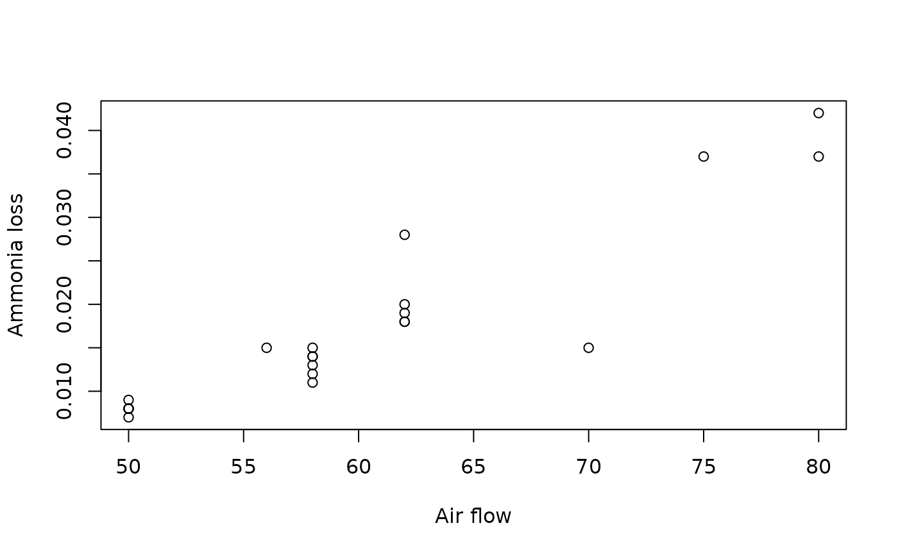

Data from an industrial ammonia oxidation process recorded over 21 days (Brownlee, 1965, p. 45). The response is the proportion of ammonia not converted to nitric acid; three process variables are included.
Format
A data frame with 21 rows and 4 columns:
perdaProportion of ammonia loss (response), in (0, 1).
corr_arAir flow rate (arbitrary units).
temp_aguaCooling water inlet temperature (degrees Celsius).
conc_acidoNitric acid concentration (percent).
Source
Brownlee, K.A. (1965). Statistical Theory and Methodology in Science and Engineering, 2nd ed. Wiley, New York, p. 45.
Details
The model selected in Espinheira et al. (2026) is:
$$\mathrm{logit}(\mu_t) = \beta_1 + \beta_2 x_{t2} + \beta_3 x_{t3}
+ \beta_4 (x_{t2} \times x_{t3})$$
$$\log(\sigma^2_t) = \gamma_1 + \gamma_2 x_{t3} +
\gamma_3 (x_{t2} \times x_{t3})$$
where \(x_{t2}\) = corr_ar, \(x_{t3}\) = temp_agua.
The variable conc_acido is included in the dataset for completeness
but was not used in the selected model.
References
Espinheira P.L., Silva F.C., Barros M., Ospina R. (2026). A Bootstrap-Calibrated Local Influence Goodness-of-Fit Procedure for Simplex Regression Models.
Examples
data(ammonia)
str(ammonia)
#> 'data.frame': 21 obs. of 4 variables:
#> $ perda : num 0.042 0.037 0.037 0.028 0.018 0.018 0.019 0.02 0.015 0.014 ...
#> $ corr_ar : num 80 80 75 62 62 62 62 62 58 58 ...
#> $ temp_agua : num 27 27 25 24 22 23 24 24 23 18 ...
#> $ conc_acido: num 89 88 90 87 87 87 93 93 87 80 ...
with(ammonia, plot(corr_ar, perda, xlab = "Air flow", ylab = "Ammonia loss"))
